| Prev | Next |
Convex Hull
Problem definition: Given a set S of n points p1, p2, ..., pn in 2D Euclidean space the goal is to compute the convex hull of S. In other words, the smallest convex polygon that contains all n points.
As noted in Problems, the hull vertices are a subset of points that form the vertices of the (smallest) convex polygon while the other points are within the polygon.
We discuss two algorithms: Jarvis and Graham-scan. The former takes O(n2) time and the latter O(nlogn) time.
1. Jarvis algorithm
The basic idea of Jarvis algorithm is as follows.
- Sort the n points along x-axis.
- Consider a vertical line L which touches or passes through the leftmost point.
- Include this point to the convex set.
- Rotate the line L in the counter-clockwise direction until it hits some point of S.
- Append this point to the convex set.
- Repeat steps 4 and 5 until leftmost point is reached.
- The points in the convex set in the left-to-right order is the convex hull of S
The procedure is demonstrated using an example.
| Step 1: L passes through leftmost point p CH(S) = { p } |
Step 2: L on rotation around p hits point q first CH(S) = { p, q } |
Step 3: L on rotation around q hits point r first CH(S) = { p, q, r } |
| 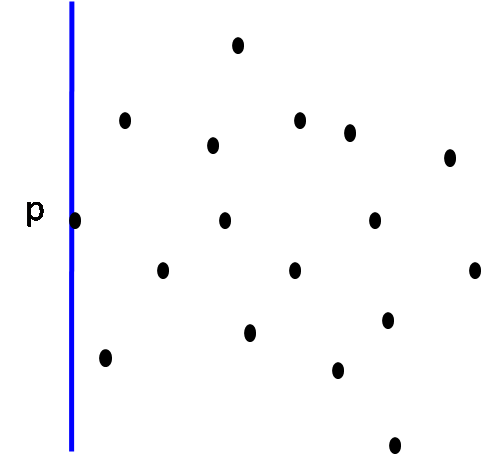 | 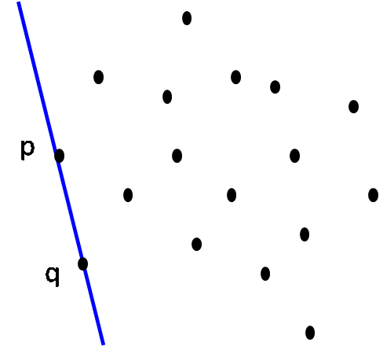 | 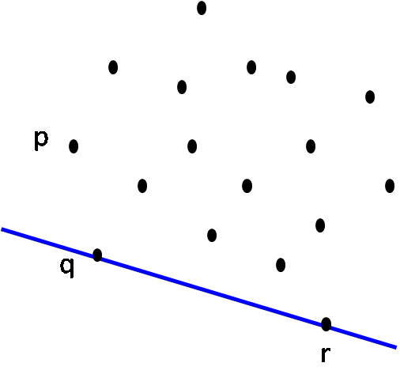 |
| Step 4: L on rotation around r hits point s first CH(S) = { p, q, r, s } |
Step 5: L on rotation around s hits point t first CH(S) = { p, q, r, s, t } |
Step 6: L on rotation around t hits point u first CH(S) = { p, q, r, s, t, u } |
| 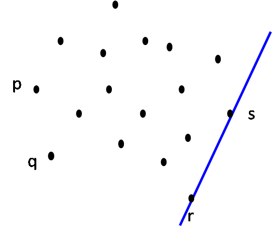 | 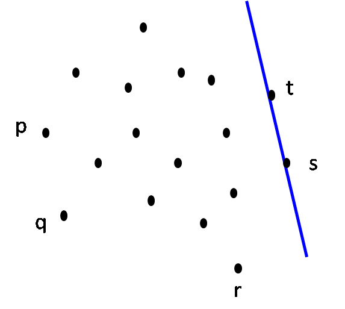 | 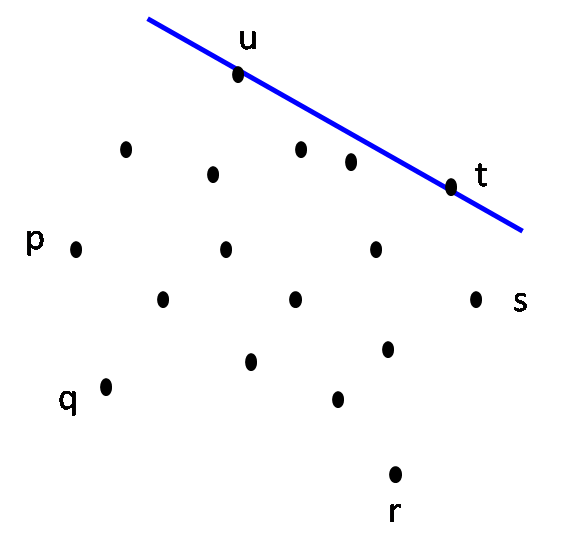 |
| Step 7: L on rotation around u hits point v first CH(S) = { p, q, r, s, t, u, v } |
Step 8: L on rotation around v hits point p first. STOP. CH(S) = { p, q, r, s, t, u, v } |
Final: The convex hull |
 |
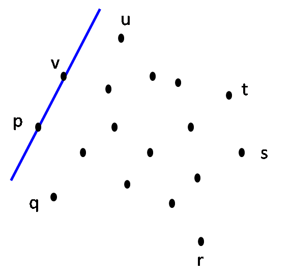 | 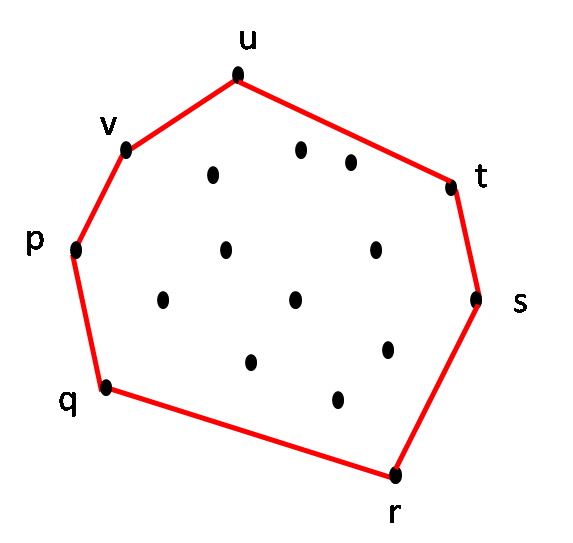 |
All the steps except the step 4 are straightforward. Hence the question is: What does it take to rotate L until it hits some point in S?
To answer this consider the scenario when L passes through the point pi-1 and pi. We need to find pi+1 among all other points. i.e. pi+1 = pj for some j where j = 1 to n and j ≠ i. It boils down to ANGLE(pi-1, pi, pj) for each j and picking the one with the largest angle.
- 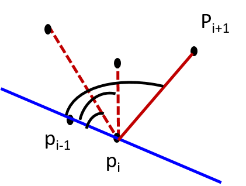
The intuition behind is simple. As we walk along the convex hull path in the counter-clockwise direction, all the points in the set S must be on the left side (or the boundary) of the hull. If we picked the next point whose angle is not maximum, some points will be on the right side.
We have already seen in Definition 5A of the Introduction, the formula for computing the angle given the three edges of a triangle. The points pi-1, pi, and pj make triangle for every j = 1 to n and j ≠ i. Because we know the coordinates, we can compute the edge lengths (which is just the Euclidean distance between the pair of points) and apply Definition 5A to find the angle. By doing this for every j and picking the point with largest angle, we get the next hull vertex pi+1. This takes O(n) time.
Algorithm: Jarvis-Convex-Hull
// Input: Set S of n points p[1], ..., p[n]
// Output: Sequence of points in S in counter-clockwise order that form hull vertices
INIT CH[S] = {}
p[1] = Leftmost point of S
p[2] = Point in S such that SLOPE(p[1]-p[2]) is the smallest
CH[S] = CH[S] U {p[1], p[2]}
i = 2
while (p[i] ≠ p[1]) {
Let p[i+1] be a point in S such that ANGLE(p[i-1] p[i], p[i+1]) is largest
i = i + 1
CH[S] = CH[S] ∪ {p[i+1]}
}
Complexity
The while loop is executed k times where k is the number of hull vertices. Inside the loop, finding p[i+1] such that ANGLE[p[i-1] pi p[i+1] is the largest, takes O(n) time. Thus, the complexity is O(nk). If k << n, then this algorithm takes linear time. If k ≈ n (worst case), then the compleixty is O(n2).
Degenerate case
What would be the shape of the convex hull if all the points are collinear? Reason it out.
Floating point considerations
Lets say p and another point p' are very close. It is possible that the algorithm starts with p and never comes back to p i.e. it comes back to p'. How do you deal with this scenario?
- 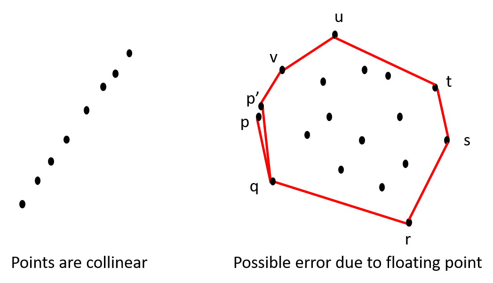
Are there other corner cases/peculiar scenarios? How would you change the algoirthm to deal with these cases?
Reference: Jianer Chen, Chapter 4.2 of Computational Geometry - Methods and Applications
2. Graham-scan
Looking closely at Jarvis's algorithm, we find that after discovering every new point of the hull, we need to compute the angle between every other point to compute the next hull vertex. Graham scan optimizes by computing the angles once for all and uses them to compute the hull vertices. Of course, this can introduce "spurious" vertices in to the convex hull which are removed dynamically as the algorithm progresses.
The basic idea of the algorithm is as follows.
- Sort the vertices in S based on the y-coordinate from bottom to top.
- Choose the bottommost vertex. Add it to convex hull set CH(S).
- Let L be the horizontal line L passing through this vertex.
- Rotate L around the vertex in the counter-clockwise direction. i.e. compute the slope (or polar angle) with every other point. Add the vertices to a set CCW(S) in the same order.
- Remove the head vertex from CCW(S) and append it to CH(S).
- While last three vertices of the convex hull set are not counter-clockwise, remove the middle vertex from the convex hull set.
- Repeat steps 5 and 6 until CCW(S) is empty.
The working of the algorithm is demonstrated with an example below.
| Initial step: Identify the bottommost vertex p |
Find slope from p to all vertices CCW(S) = {q, r, s, t, u, v, w, x, y} CH(S) = {p} |
Itn 1: Move q from CCW(S) to CH(S) CCW(S) = {r, s, t, u, v, w, x, y} CH(S) = {p, q} |
| 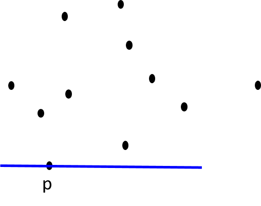 | 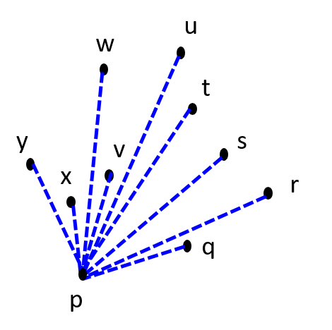 | 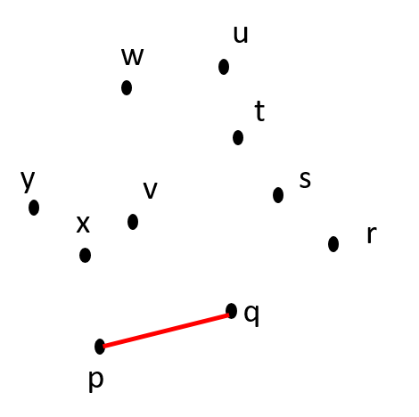 |
| Itn 2: Move r from CCW(S) to CH(S) CCW(S) = {s, t, u, v, w, x, y} CH(S) = {p, q, r} |
Itn 3: Move s from CCW(S) to CH(S) CCW(S) = {t, u, v, w, x, y} CH(S) = {p, q, r, s} |
Itn 4: Move t from CCW(S) to CH(S) CCW(S) = {u, v, w, x, y} CH(S) = {p, q, r, s, t} |
| 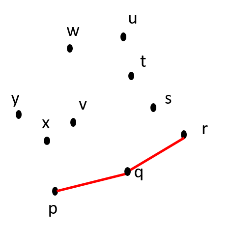 Is p-q-r counter-clockwise? YES. |
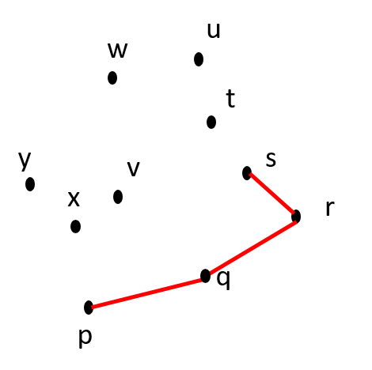 Is q-r-s counter-clockwise? YES. |
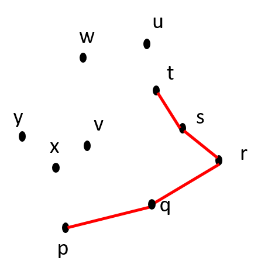 Is r-s-t counter-clockwise? NO. |
| Itn 4: Remove s from CH(S) CCW(S) = {u, v, w, x, y} CH(S) = {p, q, r, t} |
Itn 5: Move u from CCW(S) to CH(S) CCW(S) = {v, w, x, y} CH(S) = {p, q, r, t, u} |
Itn 5: Remove t from CH(S) CCW(S) = {v, w, x, y} CH(S) = {p, q, r, u} |
| 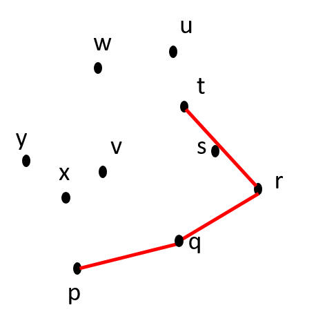 Is q-r-t counter-clockwise? YES. |
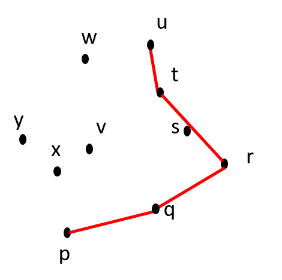 Is r-t-u counter-clockwise? NO. |
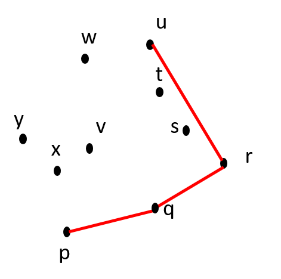 Is q-r-u counter-clockwise? YES. |
| Itn 6: Move v from CCW(S) to CH(S) CCW(S) = {w, x, y} CH(S) = {p, q, r, u, v} |
Itn 7: Move w from CCW(S) to CH(S) CCW(S) = {x, y} CH(S) = {p, q, r, u, v, w} |
Itn 7: Remove v from CH(S) CCW(S) = {x, y} CH(S) = {p, q, r, u, w} |
| 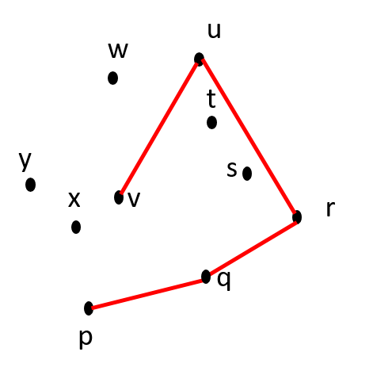 Is r-u-v counter-clockwise? YES. |
 Is u-v-w counter-clockwise? NO. |
 Is r-u-w counter-clockwise? YES. |
| Itn 8: Move x from CCW(S) to CH(S) CCW(S) = {y} CH(S) = {p, q, r, u, w, x} |
Itn 9: Move y from CCW(S) to CH(S) CCW(S) = { } CH(S) = {p, q, r, u, w, x, y} |
Itn 9: Remove x from CH(S) CCW(S) = { } CH(S) = {p, q, r, u, w, y} |
| 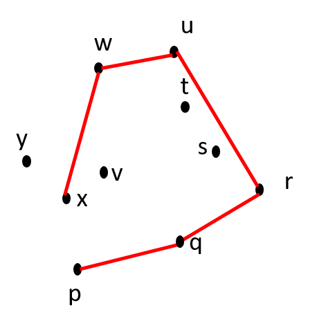 Is u-w-x counter-clockwise? YES. |
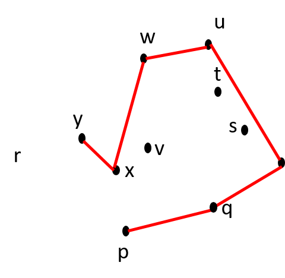 Is w-x-y counter-clockwise? NO. |
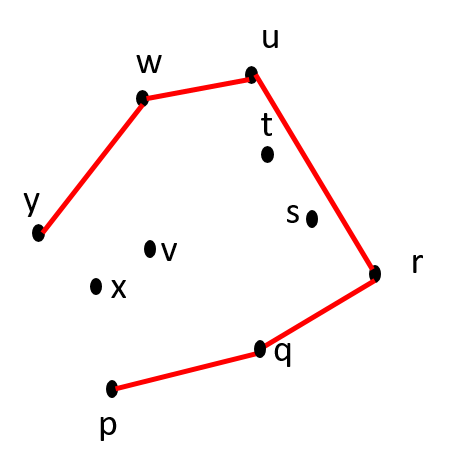 Is w-x-y counter-clockwise? NO. |
| The Final Convex Hull CH(S) = {p, q, r, u, w, y} |
||
| 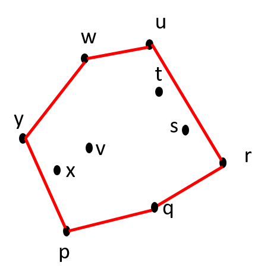 |
Algorithm: Graham scan
// Input: Set S of n points p[1], ..., p[n]
// Output: Sequence of points in S in counter-clockwise order that form hull vertices
INIT SET CH = {}
p[1] = Bottommost point of S // Requires sorting on y-coordinate
CH = CH ∪ { p[1] }
INIT CCW[1..n] = {} // CCW[1] is not necessary
for (i = 2; i <= n; i++)
CCW[i].vertex = p[i]
CCW[i].slope = SLOPE(p[1], p[i])
SORT(CCW, slope) // Sort based on slope attribute
while (CCW not empty)
Point X = HEAD(CCW)
CH = CH ∪ {X.vertex}
while (Last 3 vertices of CH are not counterclockwise)
Remove the middle vertex from CH
Complexity
Initialization of CH and CCW takes O(n) time. Sorting of CCW takes O(nlogn) time. There are two while loops, one nested inside the other. The outer loop runs for n-1 times. In the inner loop we remove a vertex from CH. Since CH can at most contain n-1 vertices, the number of times inner loop will be executed is at worst n-2 across all iterations. This is so because a convex hull will have at least two vertices at the end. Thus, the outer and inner while loops runs for O(n) time together. Hence the overall time complexity is O(nlogn).
Degenerate cases
1. What if all the points are collinear.
2. Is it possible to end up with a convex hull that is not cyclic or has breaks due to floating point computations?
3. Are there other corner cases to consider?
How would you deal with these scenarios.